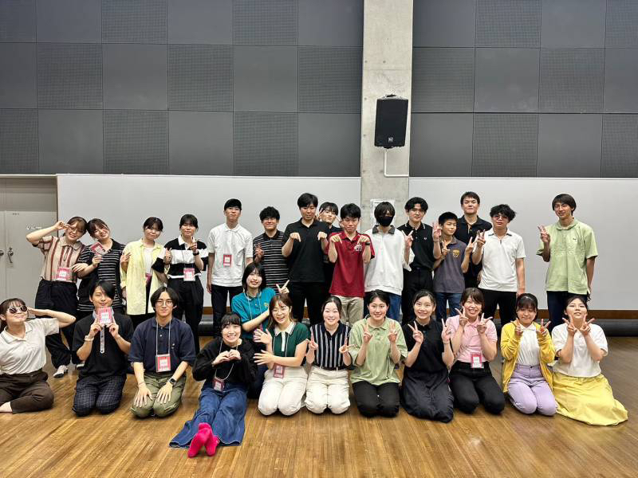

Information
- 2024/7/2
-
scheduleを更新しました。
- 2024/4/3
-
scheduleを更新しました。
- 2023/4/11
-
membersを更新しました。
たくさんの新入部員を迎え、一層賑やかになりました！
- 2023/8/10
-
scheduleを更新しました。
summer concertの詳細は公式SNSをご確認ください。
- 2023/4/11
-
scheduleを更新しました。
楽器体験や合奏見学を受け付けています。
詳しくは公式twitterをご確認ください。
- 2023/04/11
-
2/26に定期演奏会を開催しました。たくさんのご来場ありがとうございました！
youtubeにてアーカイブも公開中です。
- 2022/11/17
-
Summer Concert 2022のパンフレットを公開しました。
こちらからご覧いただけます。
- 2022/11/17
-
scheduleを更新しました。
- 2022/07/11
-
membersを更新しました。
たくさんの新入部員を迎えました！
- 2022/07/07
-
scheduleを更新しました。
- 2022/04/17
-
リニューアルが完了し、TwitterやYouTubeをHP上でご覧いただけるようになりました。最新情報のご確認や過去の演奏会の閲覧にお役立てください。
- 2022/04/14
-
HPリニューアル中のため、一部体裁の崩れが生じております。ご迷惑をおかけして申し訳ありません。
- 2022/04/01
-
第56回定期演奏会のアーカイブを公開しました。
こちらからご覧いただけます。
- 2022/02/22
-
第56回定期演奏会のパンフレットを公開しました。
こちらからご覧いただけます。
- 2022/02/20
-
2/23に第56回定期演奏会を開催いたします。
蔓延防止措置延長のため開場時間は14:10、開演時間は14:40に変更しております。加えて、ご来場は部員の家族、2代上までのOBOGに限らせていただきます。
当日のご予約はedelrote2021@gmail.comへご連絡ください。
- 2021/11/28
-
11/14にセントレア空港音楽祭へ参加しました。
(アーカイブはこちら)
12/04の岐阜大学対バンは こちらからInstagram LIVEにて配信予定です。
詳しくはフライヤーまたは公式SNSをご確認ください。
- 2021/09/28
- Scheduleを更新しました。
- 2021/07/23
- Scheduleを更新しました。
- 2021/06/04
- membersを更新しました。
- 2021/05/08
-
新入生歓迎インスタライブを行いました。
(アーカイブはこちら)
5/12の同ライブは中止になりました。
5/15より新入生を加えた新体制で活動します。
- 2021/04/09
-
Scheduleを更新しました。
楽器体験及び練習見学を受け付けております。
最新情報は公式Twitterをご確認ください。
- 2021/03/09
-
第55回定期演奏会を行いました。
2020年度の活動としてはこれで終了となります。
ありがとうございました！
- 2021/01/02
- membersを更新しました。
- 2020/11/28
-
オータムライブを行いました。
ご来場・ご視聴ありがとうございました。
- 2020/11/09
-
Scheduleを更新しました。
今年度は11月にオータムライブ、2月に定期演奏会を行う予定です。
- 2020/10/24
-
インスタライブを行いました。ご視聴ありがとうございました。
翌週から新入生を受け入れての活動を行っています。
- 2020/9/19
-
新型コロナウイルスの影響により活動を停止しておりましたが、現在活動を再開しております。
新入生向けのインスタライブなどを予定しておりますので、最新情報は公式Twitterを確認してください。
- 2020/2/27
- scheduleを更新しました。
- 2020/1/5
-
第54回定期演奏会を行いました。
来年度も応援をよろしくお願いいたします！
- 2019/7/15
- membersページ、scheduleページを更新しました。
- 2019/5/5
-
membersページを更新しました。
新入生がたくさん入ってくれました！
{kind=link}
{kind=link}
{kind=link}
Profile

私たちEdel Röte Jazz Orchester（通称：え～でる）は名古屋大学軽音楽部ジャズセクションに所属する団体で、ビッグバンド形態のジャズの演奏を中心として活動しています。
練習は真面目に楽しくやっています。
興味がある方は気軽に練習やイベントに遊びに来てください！